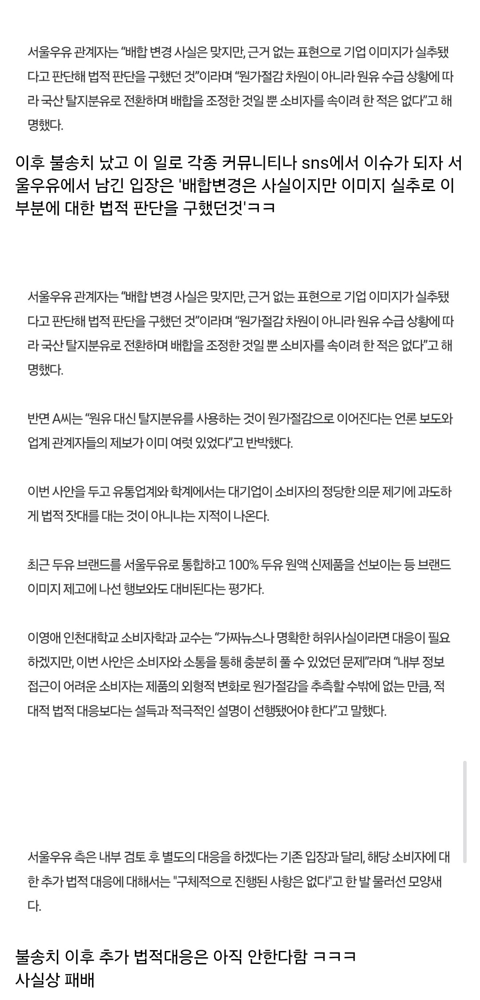

https://www.dogdrip.net/731950069
https://www.dogdrip.net/731950069
서울우유가 싱붕이 고소한 이유

배합변경은 맞는데 소비자 속일려는 의미는 아니었음~~~
고소만 안했어도 걍 가십거리로 넘어갈수있었던걸
남양해버림 ㅋㅋㅋㅋㅋ
https://www.dogdrip.net/731950069
https://www.dogdrip.net/731950069
서울우유가 싱붕이 고소한 이유

배합변경은 맞는데 소비자 속일려는 의미는 아니었음~~~
고소만 안했어도 걍 가십거리로 넘어갈수있었던걸
남양해버림 ㅋㅋㅋㅋㅋ
원유 수급 ㅋㅋㅋ 이 시발롬들아 원유 남아서 난리라며
국내에서 시장논리와 제일 동떨어진 제품이 원유임ㅋㅋㅋ
수입멸균우유 먹어야겠다~
매일이나 수입 마셔야겠군
부산우유드십쇼

서울, 남양 거르면 이제 뭐 남음? ㅋㅋㅋ
매일?
매일 무시함?
매일이있는줄 몰랐음 매일 ㄱㄱ
매.일
이제 남양 윗대가리들 다 교체되서 괜찮은거 아녔음?
소와나무 만드는 동원도 있다
파스퇴르?
연세
마트pb중에 제조원이 서울우유아닌거?
당당하면 패키지 앞에 크게 써놓던가 저렇게 몰래 바꿔놓고
뒤에 식품 유형 자세히 안보면 아무도 몰랐을 것을 글 올려서 소문내니까 홧김에 고소한거 아님?
그리고 원유가 줄었으면 뭔 소릴 하던 품질 저하 맞잖아?
맞음 ㅋㅋ
우리나라 사람들 특성상 기업이 존나 제품 잘만들면 소비자가 스스로 알아서 보호해줄텐데
기업 이미지는 지들 스스로가 저딴 무의미한 소송걸어서 실추 시킨거지 ㅋㅋㅋㅋ
그래도 고소는 안한다 ㅋㅋㅋ